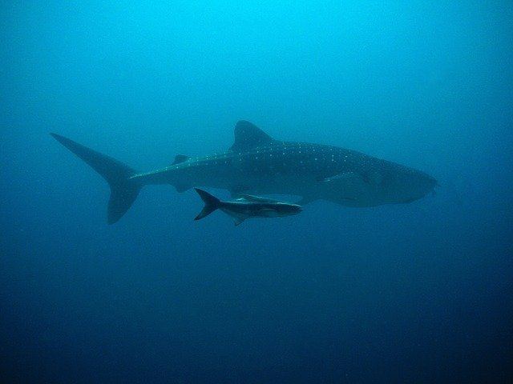
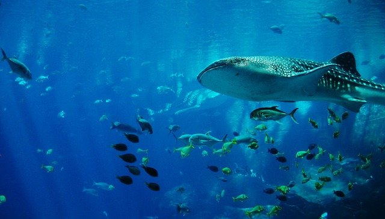

General Information
Whale Shark are a classification of shark know as carpet sharks. The largest know Whale Shark is 62 feet. Whale Sharks hold the record for largest living non-mammalian vertebrate. Despite their size Whale Sharks do not pose any threat to humans. Young Whale Sharks have even been known to play with divers.
Fun Facts
- They’re Not Whales
- Whale Sharks are Filter Feeders
- Can Process More Than 6,000 Liters of Water
- They Have Thousands of Teeth
- Have an Incredibly Long Lifespan

Filter Feeding
Filter feeding refers to the fact the Whale Shark primarily feeds on plankton. Due to the fact the teeth do not play a role in feeding they suction up large amounts of water and filtering out the plankton from the water.